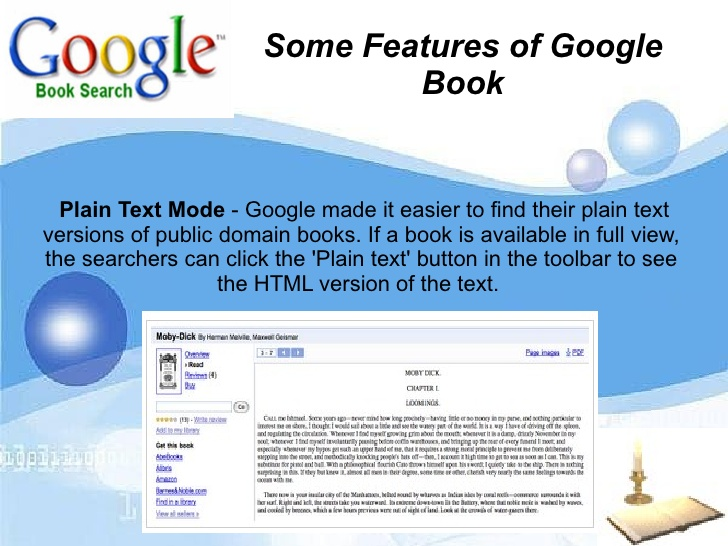
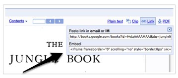
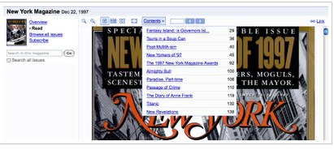
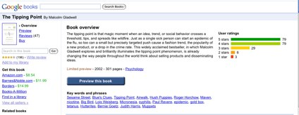

GOOGLE BOOKS, a service from Google that has the full text of books and magazines that Google has scanned, converted to text using optical character recognition and stored in its digital database.All kinds of books like fiction, non-fiction,historical are available online.Most of the bokks are free, but for some we have to pay some money,which is affordable for all.It means all can read books acoording to the choice
To visit ,Google-books
let's discuss the features of Ebooks
Plain Text Mode :- It enable people to get the book through only by the text of book.It consist of plain text button which help to see the html version of the text.It is very usefulfor Google users,who can use this format for text-to-speech and many type of other software.
Embeds and links- This help us to share our favourite book with direct link to the book pages which is available on Google books also we can copy and paste a url link in an email which we can share with friends.FOR readers, it means theycan more easily share pages from a book, they want. Also, friends of any reader can read and enjoy a book and spend time in a good way.
Contents drop-down menu:-  It is a good way to jump to chapters in the book or we can go to any article in a magazine. Books in the public domain are available for "full view" and can be downloaded for free. In-print books acquired through the Partner Program are also available for full view if the publisher has given permission, although this is rare.For in-print books where permission has been granted, the number of viewable pages is limited to a "preview" set by a variety of access restrictions and security measures, some based on user-tracking. Usually, the publisher can set the percentage of the book available for preview.[15] Users are restricted from copying, downloading or printing book previews. A watermark reading "Copyrighted material" appears at the bottom of pages. All books acquired through the Partner Program are available for preview.
Overview Page Overhaul: It is an assortment of data all about book including reviews, rating, summaries, key words and phrases related books, references from the web, places mentioned in the book and publisher information.It help readers to find famous and interesting book very easily.A 'snippet view' – two to three lines of text surrounding the queried search term – is displayed in cases where Google does not have permission of the copyright owner to display a preview. This could be because Google cannot identify the owner or the owner declined permission. If a search term appears many times in a book, Google displays no more than three snippets, thus preventing the user from viewing too much of the book. Also, Google does not display any snippets for certain reference books, such as dictionaries, where the display of even snippets can harm the market for the work. Google maintains that no permission is required under copyright law to display the snippet view.